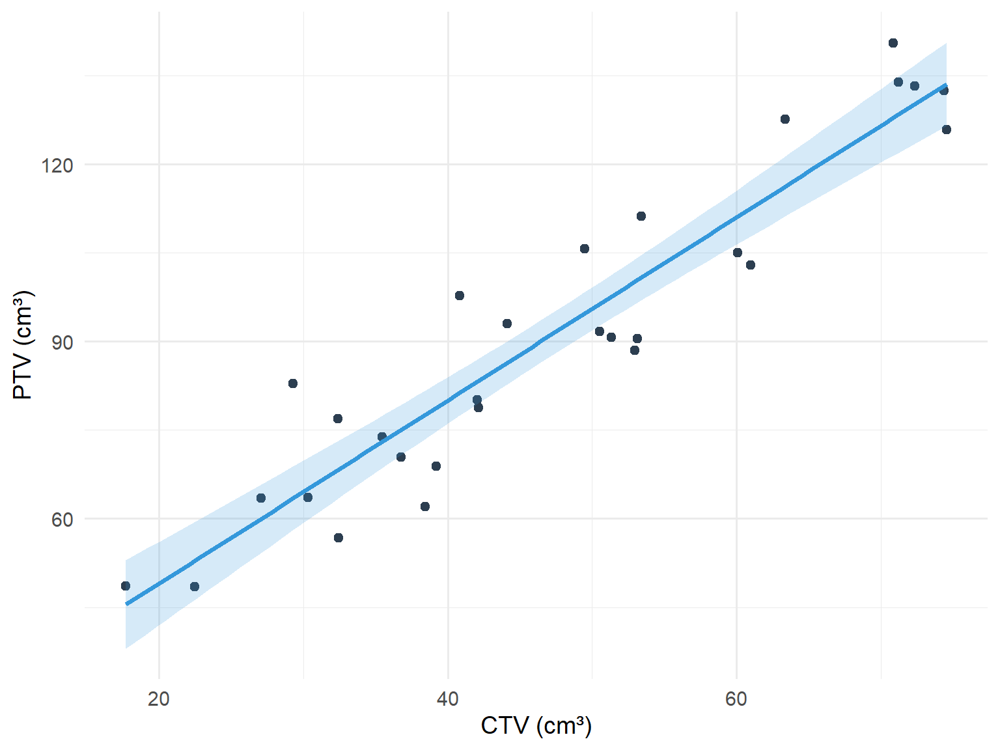

Correlation and linear regression are techniques for describing the relationships between variables.
Correlation looks for a linear association between two variables. The strength of the association is summarised by the correlation coefficient.
Regression looks for the dependence of one variable (the dependent variable) on another (the independent variable). It quantifies the best linear relation between the variables and allows the prediction of the dependent variable when only the independent variable is known.
9.2 Correlation
Correlation is used to measure the degree of linear association between two continuous variables.
Types of Correlation Coefficients
There are two main types of correlation coefficients:
Coefficient
When to Use
Pearson’s correlation coefficient
Data are approximately Normally distributed
Spearman’s rank correlation coefficient
Non-parametric alternative - use if data are not approximately normally distributed, have extreme values (outliers), or the sample size is small
Interpreting the Correlation Coefficient
The correlation coefficient (r) can take any value in the range -1 to +1.
The sign of the correlation coefficient indicates:
Positive r: One variable increases as the other variable increases
Negative r: One variable decreases as the other increases
The magnitude of the correlation coefficient indicates the strength of the linear association:
r = +1 or −1: Perfect correlation. If both variables were plotted on a scatter graph all the points would lie on a straight line
r = 0: No linear correlation
The closer r is to -1 or 1, the greater the degree of linear association
Figure 9.1: Scatterplots showing datasets with different correlations
Important Cautions
Correlation Does Not Imply Causation
It is important to remember that a correlation between two variables does not necessarily imply a ‘cause and effect’ relationship.
Correlation refers only to linear relationships. A correlation of 0 means there is no linear relationship between the two variables. However, relationships between variables may still exist but be non-linear. It is always important to look at plots of data.
Figure 9.2: Examples where the correlation coefficient is misleading - non-linear relationships
When NOT to Use Correlation
Correlation analysis is inappropriate in these situations:
Non-linear relationships: As shown above, quadratic or curved relationships will have r ≈ 0 even though a strong relationship exists.
Categorical data: You cannot calculate a meaningful Pearson correlation between categorical variables (e.g., cancer type and treatment response categories). Use contingency tables and chi-squared tests instead.
Time series data: Measurements taken over time often violate the independence assumption because consecutive observations are correlated.
Restricted range: If you only observe a narrow range of values, the correlation may not reflect the true relationship across the full range.
Outliers present: Single extreme values can dramatically inflate or deflate the correlation coefficient, making it unrepresentative of the overall pattern.
Always plot your data first before calculating correlation coefficients. Visual inspection will reveal patterns that a single number cannot capture.
Clinical Example: Inappropriate Use of Correlation
Consider trying to correlate cancer stage (I, II, III, IV) with treatment type (surgery, chemotherapy, radiotherapy). This is inappropriate because:
Stage is ordinal categorical (not truly continuous)
Treatment type is nominal categorical
The relationship is not linear
Better approaches: contingency tables, chi-squared test, or logistic regression
9.3 Linear Regression
Linear regression is used when we believe a variable y is linearly dependent on another variable x. This means that a change in x will lead to a change in y. We use linear regression to determine the linear line (the regression of y on x) that best describes the straight-line relationship between the two variables.
The Regression Equation
The equation which estimates the simple linear regression line is:
\[Y = a + bx\]
Where:
x is usually called the independent, predictor, or explanatory variable
Y is the value of y (usually called the dependent, outcome, or response variable) which lies on the estimated line. It is an estimate of the value we expect for y if the value of x is known. Y is called the fitted value of y
a and b are called the regression coefficients of the estimated line
a is the intercept of the estimated line; it is the average value of Y when x = 0
b is the slope of the estimated line; it represents the average amount by which Y increases if we increase x by one unit
Residuals and Least Squares
The residual is the difference between the actual response y and the predicted response Y from the regression line. The method of least squares regression works by minimising the sum of squared residuals.
The intercept and slope are determined by the method of least squares (often called ordinary least squares, OLS). This method determines the line of best fit so that the sum of the squared residuals is at a minimum.
code
set.seed(789)n <-20reg_data <-tibble(age =runif(n, 20, 75),hb =8.24+0.13* age +rnorm(n, 0, 1.5))model <-lm(hb ~ age, data = reg_data)# Add one point to highlight residualhighlight_point <-tibble(age =31, hb =10.5)predicted_hb <-predict(model, newdata = highlight_point)ggplot(reg_data, aes(x = age, y = hb)) +geom_point(colour ="#2c3e50", size =2) +geom_smooth(method ="lm", se =FALSE, colour ="#3498db", linewidth =1) +geom_point(data = highlight_point, colour ="#e74c3c", size =3) +geom_segment(aes(x =31, xend =31, y =10.5, yend = predicted_hb),colour ="#e74c3c", linetype ="dashed") +annotate("text", x =60, y =10, label =paste0("Hb = ", round(coef(model)[1], 2), " + ", round(coef(model)[2], 2), " × Age"),size =4, colour ="#3498db") +annotate("text", x =38, y =10.2, label ="residual", size =3, colour ="#e74c3c") +labs(x ="Age (years)", y ="Haemoglobin (g/dL)") +theme_minimal(base_size =14)
Figure 9.3: Scatterplot with fitted regression line showing residuals
Coefficients, Confidence Intervals, P-values, and R-squared
As mentioned previously:
The intercept (a) is the average value of the response when the predictor is 0
The slope (b) is the average change in the response when the predictor increases by 1 unit
If the predictor was a binary variable (for example indicating men and women) the slope (b) would indicate the average difference in response between the two groups
The intercept (a) and the slope (b) are sample estimates of corresponding population parameters. These estimates have an inherent variability which is used to provide 95% confidence intervals for where the true population parameters may lie.
The interval for the slope indicates the range, for the wider population, that the change in the response is likely to lie between as the predictor increases by 1 unit. If this interval includes 0, the coefficient is not statistically different from 0.
Each coefficient has a p-value. The p-value relates to a test of the null hypothesis that the coefficient equals 0, versus the alternative hypothesis that the coefficient does not equal 0:
If p<0.05 the null hypothesis is rejected in favour of the alternative hypothesis
If p>0.05 the null hypothesis cannot be discounted
R-squared
We can assess how well the line fits the data by calculating the coefficient of determination R-squared (usually expressed as a percentage ranging from 0-100%), which is equal to the square of the correlation coefficient.
This represents the percentage of the variability of the response that can be explained by the predictor. The higher the R-squared, the better the model.
9.4 Assumptions of Linear Regression
Many of the assumptions which underlie regression analysis relate to the distribution of the residuals. The assumptions are:
The relationship between the response and predictor is approximately linear
The observations in the sample are independent
The distribution of residuals is Normal
The residuals have constant variance (homoscedasticity)
Checking Assumptions
Assumptions can be checked by examining plots of the residuals. The most common method is to plot the residuals against the fitted values. This plot can show systematic deviations from a linear relationship and highlight non-constant variance. A Normal probability plot or histogram can be used to assess the Normality assumption of residuals.
A linear relationship means that across the range of fitted values, the residuals are spread equally above and below 0
Constant variance of the residuals means that in a plot of residuals against fitted values, the spread of the residuals doesn’t change
Diagnostic Plots for Checking Assumptions
Here are examples of diagnostic plots showing both good and problematic patterns:
Figure 9.4: Diagnostic plots for checking regression assumptions
Interpreting Diagnostic Plots
Residuals vs Fitted (top left): Look for random scatter around zero with no pattern. A funnel shape indicates non-constant variance.
Residuals vs Fitted (top right): Shows problematic pattern where spread increases with fitted values.
Q-Q plot (bottom left): Points should follow the diagonal line closely. Deviations suggest non-Normal residuals.
Histogram (bottom right): Should show approximately bell-shaped, symmetric distribution.
9.5 Worked Example: CTV and PTV in Prostate Cancer
The clinical target volume (cm³) (CTV) and planning target volume (PTV) were recorded for 29 patients receiving stereotactic radiotherapy for prostate cancer. The question of interest was what the relationship between PTV and CTV was, and could the average PTV be predicted when the CTV is known.
code
set.seed(321)n <-29prostate_data <-tibble(ctv =runif(n, 15, 75),ptv =16.96+1.58* ctv +rnorm(n, 0, 8))model_prostate <-lm(ptv ~ ctv, data = prostate_data)ggplot(prostate_data, aes(x = ctv, y = ptv)) +geom_point(colour ="#2c3e50", size =2) +geom_smooth(method ="lm", se =TRUE, colour ="#3498db", fill ="#3498db", alpha =0.2) +labs(x ="CTV (cm³)", y ="PTV (cm³)") +theme_minimal(base_size =14)

Figure 9.5: Relationship between CTV and PTV in prostate cancer patients
Table 9.1: Linear regression output for PTV vs CTV
Term
Estimate
Std. Error
95% CI Lower
95% CI Upper
P-value
Intercept
18.043
5.430
6.901
29.186
0.003
CTV
1.550
0.109
1.326
1.773
0.000
The equation of the line is:
\[\text{PTV} = 16.96 + 1.58 \times \text{CTV}\]
This means that as the CTV increases by 1 cm³, the PTV increases by 1.58 cm³.
The 95% confidence interval for the slope is (1.32, 1.84). In a wider population of similar prostate cancer patients, as the CTV increases by 1 cm³, the PTV is likely to increase by between 1.32 and 1.84 cm³.
The R-squared for the model was 0.85. This means that 85% of the variation in PTV was explained by CTV alone. 15% remains unexplained.
9.6 Multiple Linear Regression
Multiple linear regression is an extension of simple linear regression. We would use multiple linear regression when we want to predict a response using several predictor variables. For example, we may wish to predict respiratory muscle strength from weight, age, height and sex.
The assumptions of multiple linear regression are the same as those for simple linear regression.
Interpretation of Coefficients in Multiple Regression
The intercept (a) is the average value of the response when all the predictors have values equal to zero
If a predictor is continuous, its slope (b) indicates the average change in the response when all the other predictors are held constant
If a predictor is binary (for example indicating men and women), the slope (b) represents the average difference in the response between the groups when all other predictors are held constant
When multivariable regression is used, a variation of the R-squared called the adjusted R-squared is employed to assess the fit of the model. The adjusted R-squared takes account of the number of predictors used in the model, but its interpretation is the same as for R-squared.
9.7 Summary
Concept
Description
Correlation coefficient (r)
Measures strength of linear association (-1 to +1)
Pearson’s correlation
For Normally distributed data
Spearman’s correlation
Non-parametric alternative
Linear regression
Predicts response from predictor variable
Intercept (a)
Average response when predictor = 0
Slope (b)
Average change in response per unit increase in predictor